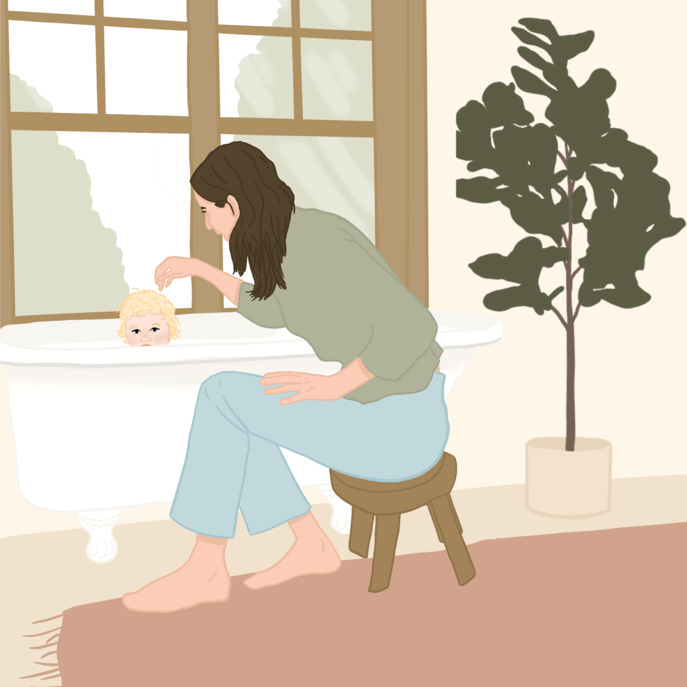

The Good News.
There's hope! If you don't have a green thumb you can still be a sucessful plant parent! Here are a list of plants that are perfect to try out if you're just starting out, don't have much time to put into caring for your plants, or you're just lazy AF but still want cute indoor plants for decor:
We can't guarantee you won't kill these bad boys! In fact, if you do, welcome to the club!
